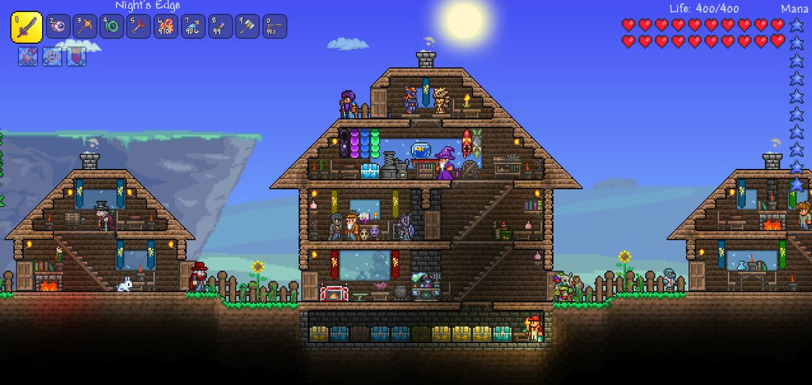

บทความ Terraria
"Terraria" เป็นเกมแนวแอ็กชัน-แอดเวนเจอร์ ที่พัฒนาและเผยแพร่โดย Re-Logic ซึ่งเป็นผู้พัฒนาเดียวกันกับผู้สร้างเกมด้วยความสนุกสุดมาก เป็นเกมที่เป็นที่รู้จักและได้รับความนิยมอย่างกว้างขวางในวงกว้าง โดยเฉพาะในวงการเกมอินดี้
กลยุทธ์และเกมเพลย์
"Terraria" เป็นเกมที่ผสมผสานระบบการเล่นแนวแอ็กชัน กับการสร้างโลกแบบเปิด ซึ่งผู้เล่นจะได้บทบาทเป็นตัวละครที่ต้องการสำเร็จภารกิจต่าง ๆ ในโลกที่เต็มไปด้วยสิ่งต่าง ๆ โดยมีวัตถุประสงค์หลักคือการค้นพบและเก็บของรวบรวมต่าง ๆ การสร้างฐานและอาวุธ เพื่อเตรียมพร้อมในการต่อสู้กับศัตรูต่าง ๆ ที่ปรากฏในโลกนี้
ระบบและคุณสมบัติสำคัญ
การสร้าง: ผู้เล่นสามารถสร้างฐานและโครงสร้างต่าง ๆ ได้ตามที่ต้องการ โดยใช้วัสดุต่าง ๆ ที่เก็บรวบรวมได้จากการผจญภัย
การผจญภัย: โลกของ "Terraria" เต็มไปด้วยอันตรายที่ต้องหลีกเลี่ยงและศัตรูต่าง ๆ ที่ต้องท้าทาย
การต่อสู้: มีการสร้างอาวุธและชุดเกราะที่หลากหลาย เพื่อเพิ่มพลังโจมตีและการป้องกัน
สิ่งดอกไม้และสิ่งประดับ: การสร้างรางวัลและการปรับปรุงต่าง ๆ สำหรับตัวละครของคุณ
สร้างชุมชน: ทำงานร่วมกับเพื่อนๆ ในโลกออนไลน์หรือในโลกที่สร้างขึ้นเอง

สรุปเนื้อหา
"Terraria" เป็นเกมที่มีความหลากหลายและเนื้อหาที่น่าสนใจสำหรับผู้เล่นที่ชื่นชอบการผจญภัยและการสร้างสร้าง และยังเสนอประสบการณ์ที่สนุกสุดยอดในการสร้างโลกแบบเปิดที่ไม่เหมือนใคร
Terraria ที่นี่
กลับหน้าหลัก
กลับหน้าหลัก